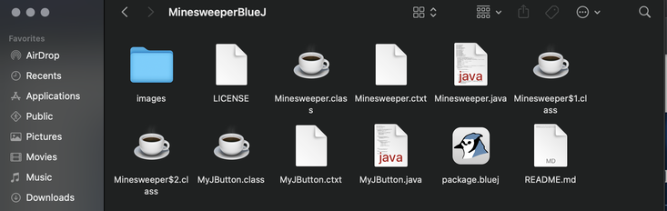

| Home | Intro | APCSP | APCSA | Research |
☑️ Install BlueJ from the Software Center(Cobb County Schools) or BlueJ.org
☑️ Download the Zip (buttons on the bottom of this page).
☑️ Extract the Zip and move to a working location (One Drive on school computers).
☑️ Click on the BlueJ package to open in BlueJ.
☑️ Compile all parts of the program (right click on the files and select compile).
☑️ Find the part of the program that has the option void main(String[]args) by right clicking each.
☑️ Select void main(String[]args) and hit enter (or select OK) to run the program

The links below will take you to pages that are not course specific. These will allow you to explore other computer science and coding topics.
|
|
|
|